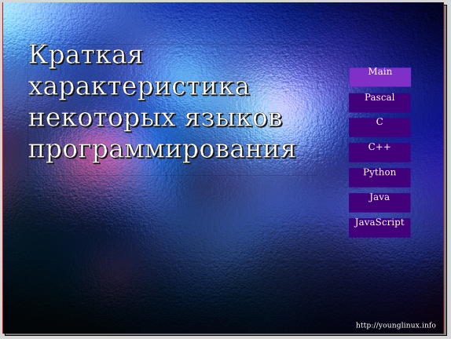
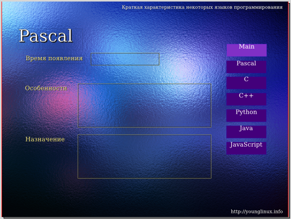
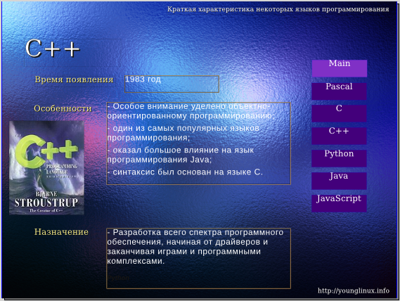
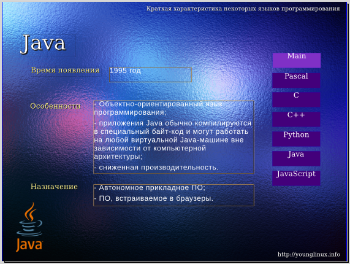

Практическое введение в Scribus
Создадим в Scribus pdf-презентацию на тему "Краткая характеристика некоторых языков программирования". Подготовленный текст и изображения находятся в архиве.
В окне "Новый документ" перейдите на вкладку "Создать документ из шаблона". Выберите PDF-презентации, а затем понравившийся шаблон, например Glass_Ripples. Если появится окно "Замена шрифтов", согласитесь с предложенной заменой или укажите шрифт сами. Сохраните документ.
Если шаблон имеет темный фон, то цвет размещаемого на страницах-слайдах текста должен быть светлым (например, белым). Иначе текст будет тяжело читать.
Часто в презентациях на каждый слайде указывают название самой презентации, ФИО того, кто ее подготовил, или название организации. Размещается эта информация обычно вверху или внизу, в так называемых колонтитулах. В Scribus, в отличие от офисных пакетов, на страницу нельзя добавить настоящие колонтитулы, однако мы их создадим иным способом, создав так называемую мастер-страницу.
Создайте блок с текстом "Краткая характеристика некоторых языков программирования" и разместите его вверху справа. Внизу справа добавьте блок текста, в котором бы была информация о вас и/или учебном заведении. Размер шрифта в обоих случаях — 12-14 пунктов (pt).
Выполните команду Страница → Преобразовать в мастер-страницу..., назовите ее "Фон".
Теперь все последующие страницы будут созданы из данной мастер-страницы, которая уже содержит необходимые "колонтитулы".
Первый слайд будет отличаться от остальных, у него не будет верхнего колонтитула, т.к. название презентации будет в центральной части страницы.
Перетащите верхний колонтитул влево и в центр, увеличьте рамку текстового блока так, чтобы существенно увеличив размер шрифта, текст поместился в блоке.
Теперь создайте абзацный стиль для заголовка, назовите его "Title". Чтобы наблюдать за изменением стиля, примените его к текстовому блоку через панель свойств (F2) (вкладка Текст → Параметры стиля).
Установите следующие свойства стиля в окне "Стили" (F3): кегль — 50 pt, интерлиньяж — 60 pt. Гарнитура, наличие тени, контура и остального - по вашему усмотрению.
Выполните команду Страница → Вставить.... В окне "Вставка страницы" укажите следующее: вставить 6 страниц, мастер-страница — Фон.
Теперь презентация состоит из семи страниц-слайдов. Переходить от одного к другому можно прокручивая колесо мыши или с помощью панели внизу окна Scribus.
Если вы использовали шаблон Glass_Ripples, то могли заметить, что доступно слишком мало цветов (черный и белый). Добавим еще пару цветов в доступную палитру.
Выполните команду Правка → Цвета. В окне "Цвета" нажмите кнопку "Добавить", далее выберите цвет, назовите его и сохраните. Добавьте еще один цвет.
Наша презентация будет содержать элементы интерактивности (взаимодействие с пользователем). Это будут кнопки, при щелчке на которые открывается определенный слайд.
Элементы для интерактивного управления находятся на специальной панели "PDF-инструменты". Если выбрать там кнопку и растянуть ее на странице, то вы ничего не увидите. Дело в том, что внешний вид (фон и контур) настраивается в окне свойств (F2), а надпись на кнопке с помощью редактора текста (Ctrl + T). Двойной щелчок по блоку-кнопке открывает окно, где можно задать свойства кнопки как интерактивного элемента.
Имейте в виду, то, что вы видите в Scribus, может выглядеть иначе в программе для просмотра pdf-документа. Кроме того, в некоторых программах кнопки работать не будут.
Разместите на первой странице блок-кнопку. Добавьте текст (слово "Main") с помощью редактора (Ctrl + T), оформите его. В окне "Свойства" (F2) добавьте цвет заливки кнопки (вкладка "Цвета").
Два раза кликните по кнопке. Откроется окно "Свойства поля". На вкладке "Внешний вид" выберите стиль "С фаской". На вкладке "Действия" в раскрывающемся списке выберите "Перейти". Должна быть указана страница 1. Нажмите ОК.
Скопируйте кнопку, поменяйте цвет ее фона, измените надпись на "Pascal". Продублируйте эту вторую кнопку еще пять раз. Измените надписи на следующие: "C", "С++", "Python", "Java", "JavaScript".
Для каждой кнопки настройте ее переход на соответствующий слайд: Pascal - 2, C — 3, C++ - 4, Python — 5, Java — 6, JavaScript — 7.

Выделите текстовый блок с заголовком и все кнопки. Скопируйте их на все остальные слайды.
Начиная со второго слайда измените текст в заголовках соответственно на "Pascal", "C", "С++", "Python", "Java", "JavaScript". Уменьшите размер текстового блока.
Создайте на втором слайде три текстовых блока со следующим текстом: "Время появления", "Особенности", "Назначение". Это подзаголовки. Оформите их в едином стиле; если требуется дополнительный цвет, добавьте его (Правка → Цвета).
Создайте пустой текстовый блок, сделайте рамку блока цветной.
Создайте две копии этого блока. Каждый пустой блок должен быть рядом со своим подзаголовком.

Скопируйте все шесть созданных текстовых блоков на остальные слайды (с 3 по 7).
Свяжите между собой пустые текстовые блоки (N). Таким образом текст загруженный в первый блок "растечется" по всем остальным.
Выделите первый пустой текстовый блок и загрузите в него текст из файла odt.
Откройте окно "Стили" (F3). Измените параметры загруженного стиля абзаца (Text_20_body): гарнитуру, кегль (примерно 18 pt), цвет (белый) и др.
Далее следует удалить из текстовых блоков, в которые был загружен текст, названия языков программирования, а сами блоки уменьшить или увеличить так, чтобы соответствующий текст оказался на своем месте.
Разместите на слайдах блоки изображений и загрузите соответствующие картинки в каждый из них.
Уделите внимание взаимному расположению блоков текста и изображения на каждом слайде. Они могут располагаться немного по-разному, это придаст презентации динамичности.


Заполните информацию о документе (Файл → Параметры документа → Информация о документе).
Экспортируйте документ в формат pdf. Посмотрите презентацию, проверьте работоспособность кнопок.